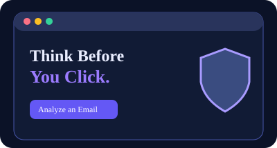
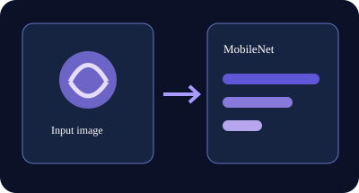
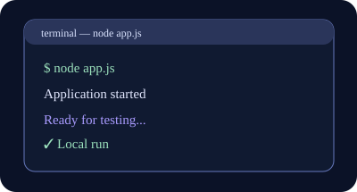
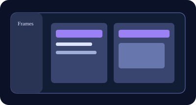
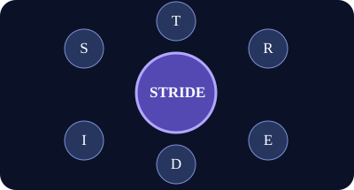
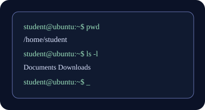
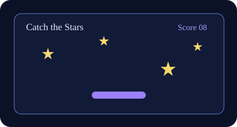

📚
Learn
Understand phishing, credential attacks, suspicious links, passwords, and social engineering.
Learn how to recognize phishing attacks, suspicious emails, dangerous links, and common online threats before they fool you.
PhishAware is an interactive cybersecurity awareness project designed to help everyday users recognize phishing and make safer decisions online.
Understand phishing, credential attacks, suspicious links, passwords, and social engineering.
Use realistic examples and quizzes to practice spotting common warning signs.
Learn practical habits that can help protect your accounts, devices, and personal information.
Read the simulated email carefully, then decide whether it looks safe or suspicious.
From: Student Account Support <support@rutgers-security-login.net>
Subject: ⚠️ Your Student Account Will Be Suspended
We detected unusual activity on your student account. Verify your account immediately to prevent suspension.
Senior • Information Technology & Cybersecurity
I am a senior studying Information Technology and Cybersecurity. I created PhishAware to explore how technology can help people recognize cybersecurity threats and make safer decisions online.
Fitness, photography, fashion, technology, and content creation.
HTML, CSS, JavaScript, Python, Java, Linux, databases, and cybersecurity fundamentals.
Cybersecurity Analysis, IT, Data Analysis, and Project Management.
Strengthen my technical skills, complete my degree, and gain hands-on experience.
The project combines front-end technologies with cybersecurity concepts to create an interactive learning experience.
Provides the structure and content of the website.
Creates the responsive layout, colors, cards, and visual effects.
Powers quizzes, simulations, the analyzer demo, and interactive tools.
Can help identify patterns commonly associated with suspicious emails.
Could securely store permitted application data when a backend is added.
HTTPS, validation, access control, and secure coding help protect users.
Messages designed to trick users into revealing information or clicking malicious links.
Attempts to steal, guess, or reuse usernames and passwords.
Links can disguise unfamiliar domains or imitate trusted websites.
Use strong, unique passwords and avoid password reuse.
Multi-factor authentication adds another verification step beyond a password.
Attackers manipulate people using trust, fear, urgency, or curiosity.
Limit unnecessary sharing of personal and sensitive information.
Malicious software can damage systems, steal data, or provide unauthorized access.
This threat model identifies potential threats to PhishAware and shows where security controls can reduce risk.
Attackers may attempt to access accounts using compromised credentials.
Mitigation: MFA, strong password policies, rate limiting.Users may attempt to access resources outside their permitted role.
Mitigation: Server-side authorization checks and least privilege.Malicious input may attempt to manipulate database queries.
Mitigation: Parameterized queries and input validation.Untrusted content may attempt to execute scripts in a browser.
Mitigation: Output encoding, sanitization, and CSP.Excessive requests may reduce application availability.
Mitigation: Rate limiting and traffic monitoring.Stolen or reused credentials can be used to access accounts.
Mitigation: MFA and credential protections.Sensitive information could be exposed through insecure handling.
Mitigation: Encryption, access control, and minimal data collection.An attacker may attempt to reach protected resources.
Mitigation: Authentication, authorization, logging.Pretending to be another user. Protect with strong authentication and MFA.
Unauthorized data changes. Protect with validation and integrity controls.
Denying an action occurred. Protect with appropriate audit logging.
Exposure of confidential data. Protect with encryption and access controls.
Making services unavailable. Protect with rate limiting and monitoring.
Gaining excessive permissions. Protect with least privilege and authorization checks.
How PhishAware works today, and how its architecture would evolve into a secure, account-based phishing analysis service.
GitHub Pages serves HTML, CSS, JavaScript, and images over HTTPS. The quiz, chatbot, and phishing analyzer run in the visitor's browser. There is no custom backend, database, login, or server-side session today.
A dedicated web/API server would support user accounts, server-side phishing analysis, protected data storage, access controls, and monitored sessions. These are design decisions, not deployed features.
Proposed design: browser → HTTPS web server → authenticated application API → database. The current site uses only the browser and GitHub Pages portions.
Each component has a clear role in the design, with current functionality separated from planned functionality.
Responsive pages, email input form, learning challenges, and result displays. Treat every input as untrusted.
ImplementedGitHub Pages currently hosts static files via HTTPS. A future reverse proxy could route API requests and apply traffic limits.
Static hosting implementedFuture server-side API for phishing classification, validation, business rules, logging, and model inference.
ProposedFuture database for account records and optional saved analyses, with minimal retention and restricted service credentials.
ProposedFuture sign-in using strong password hashing, account protection, and optional multi-factor authentication.
ProposedServer-side checks ensure users can access only their own analyses; administrators receive limited, audited privileges.
ProposedHTTPS protects traffic to the published site today. Future sensitive records would also use encryption at rest and managed secrets.
HTTPS implemented · storage proposedFuture sessions would use Secure, HttpOnly, SameSite cookies, short expiration times, and session invalidation on logout.
ProposedFuture API validates email length and format, limits request size, escapes displayed content, and avoids executing pasted links or HTML.
Server-side controls proposedSecurity principle: Do not store pasted email content by default. If saved analyses are added later, request consent and apply retention limits. This design also supports STRIDE mitigations for spoofing, tampering, information disclosure, and denial of service.
Paste a suspicious email below. This classroom demonstration checks for common warning signs using local rules.
⚠️ Educational demonstration only. PhishAware may make mistakes and does not perform a real security scan. Never rely on this tool as the only way to determine whether an email is safe.
Training progress: 0%
Selected technical projects and assignments exploring web development, artificial intelligence, security analysis, and application design. Each project highlights the tools used and the skills practiced.

WEB DEVELOPMENT · PROJECT 01A responsive cybersecurity awareness platform built with HTML, CSS, and JavaScript. Features include phishing identification activities, a five-question quiz, a rule-based email checker, and a STRIDE threat model.
HTML · CSS · JavaScript
Live website demonstration
Explore live website →
ARTIFICIAL INTELLIGENCE · PROJECT 02Used TensorFlow.js and MobileNet in a browser-based image classification exercise. Explored how a pretrained model can identify the contents of an uploaded image and return confidence-ranked predictions.
TensorFlow.js · MobileNet · JavaScript
Project concept visualization

JAVASCRIPT & NODE.JS · PROJECT 03Developed and tested a JavaScript/Node.js application locally. Practiced structuring an interactive interface, running the development environment, and testing application behavior in a browser.
Node.js · JavaScript · VS Code
Project concept visualization

USER INTERFACE DESIGN · PROJECT 04Designed the early PhishAware screens in Figma, planning the homepage, About Me, Technology, Cybersecurity, and Threat Model sections before implementing the website in code.
Figma · Wireframing · Prototyping
Project concept visualization

SECURITY ANALYSIS · PROJECT 05Analyzed potential security threats through the STRIDE framework: spoofing, tampering, repudiation, information disclosure, denial of service, and elevation of privilege. Connected risks to proposed mitigations.
STRIDE · Risk Assessment · Mitigations
View threat model on this website
Explore STRIDE analysis →
LINUX & SYSTEMS · PROJECT 06Practiced using an Ubuntu environment, exploring shell commands, directory navigation, file paths, command history, help pages, and Linux distribution comparisons.
Ubuntu · Linux · Terminal
Project concept visualization

FRONT-END PROGRAMMING · PROJECT 07Created a browser-based interactive game using HTML, CSS, and JavaScript, practicing user interaction, game state, and interface testing.
HTML · CSS · JavaScript
Project concept visualization
Built a React-based campus event tracker to practice component-based interfaces, local development with Vite, and organizing information in a user-friendly dashboard.
React · Vite · JavaScript
Project concept visualization
My coursework combines practical programming, interface design, operating systems, and cybersecurity. PhishAware brings those skills together in one interactive website. My research investigates machine-learning methods for phishing email detection using a carefully selected Kaggle dataset.
PhishAware: Comparative Evaluation of Machine Learning and Natural Language Processing for Email Threat Detection
Phishing emails impersonate trusted senders and attempt to steal credentials or sensitive information. This study aims to determine how effectively different classifiers can distinguish phishing messages from legitimate emails.
It extends PhishAware's current educational, rule-based email checker toward evidence-based phishing detection and connects security awareness with measurable machine-learning research.
Research input: labeled phishing and legitimate email text. The study will use labeled email text to compare traditional machine learning with transformer-based classification.
Browse Kaggle phishing datasets ↗The study distinguishes phishing from general spam and emphasizes reliable labels.
Which of Logistic Regression, Random Forest, and DistilBERT offers the best balance of detection performance and computational efficiency?
Compare machine-learning approaches for distinguishing phishing emails from legitimate messages and explore how the findings could improve PhishAware.
DistilBERT may identify sophisticated phishing language more effectively than traditional models, but only experiments can determine whether this hypothesis holds.
My planned experimental workflow — each stage will be documented for reproducibility.
TF-IDF text features, fast to train, easier to interpret.
Question: Can a simple model already perform well?Multiple decision trees can capture nonlinear feature patterns.
Question: Do richer patterns improve classification?Uses pretrained contextual language representations; requires more compute.
Question: Does context justify the extra cost?Select a Kaggle dataset, review its provenance and labels, and check missing values, duplicates, and class balance.
Clean text, split data into training/validation/test sets, and prevent duplicate or source-based leakage.
Train three proposed classifiers using the same evaluation split and compare performance fairly.
Study false negatives, discuss limitations, and explore how findings might improve PhishAware.
A fast, interpretable text classifier using TF-IDF features. Establishes a strong traditional ML baseline.
Model architectureCombines multiple decision trees to learn patterns in engineered email features or text vectors.
Model architectureA pretrained transformer to fine-tune for email text classification, subject to compute and dataset constraints.
Model architectureEvaluation framework for comparing phishing email classifiers. The live rule-based analyzer elsewhere on this site is a working demonstration; it is not a trained model.
Adjust the example below to see how missed phishing messages affect evaluation metrics.
ILLUSTRATIVE SCENARIO — NOT TRAINED MODEL RESULTS OR KAGGLE DATA100 fictional test emails: 40 phishing, 60 legitimate.
Missed phishing emails are false negatives. Reducing them improves recall.
This interactive graph teaches how evaluation metrics work. All counts are invented teaching examples, not experimental measurements. The three proposed models have not been trained or benchmarked here.
Compare precision, recall, F1, accuracy, and confusion matrices on the same held-out test set.
Record training time, inference time, and model size under documented hardware conditions.
Review false negatives, false positives, class balance, and potential dataset leakage.
Of the messages predicted as phishing, how many are actually phishing? This measures false-alarm control.
Of all phishing messages, how many are detected? High recall is important to reduce missed threats.
The harmonic mean of precision and recall, useful for evaluating performance on imbalanced datasets.
PhishAware already demonstrates email risk detection using explainable warning signals such as urgent requests, suspicious links, and demands for credentials. Use the live analyzer below to see the current prototype in action. This demonstration is not presented as machine-learning accuracy data.
Try the live email analyzer →Controlled model comparisons and measured scores belong to the later experimental stage; no numerical model results are claimed without running the experiments.
Educational pages, phishing activities, STRIDE analysis, and rule-based email checker.
Defined the proposed comparison and evaluation criteria.
Validate Kaggle data; train and evaluate the models fairly.
Report measured findings, limitations, security implications, and next steps.
Choose the exact Kaggle dataset and verify phishing labels, ethical use, and data quality.
Build reproducible Python notebooks, train models, record metrics, and analyze mistakes.
Document the security problem, methodology, contributions, experimental results, limitations, and conclusions.